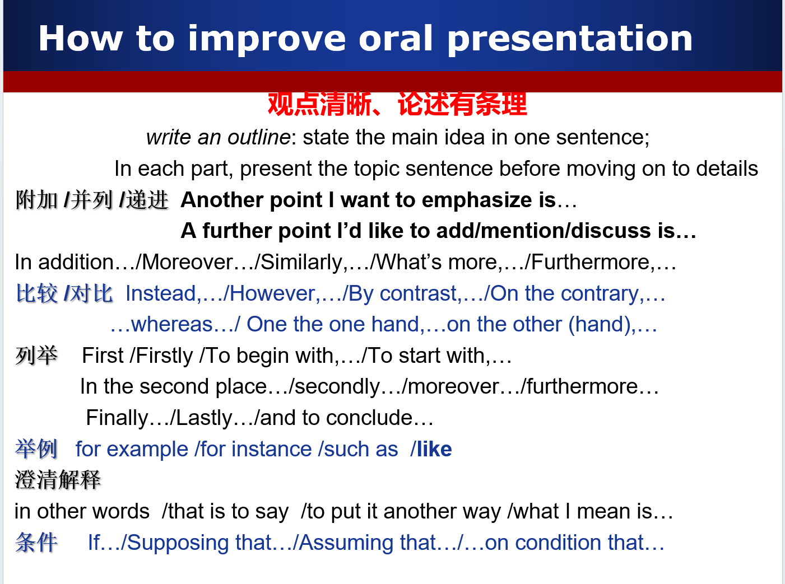
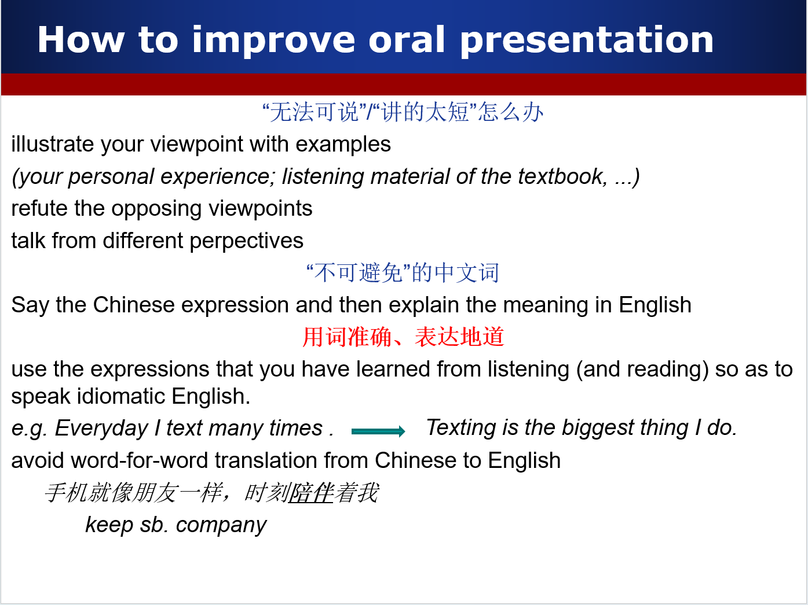
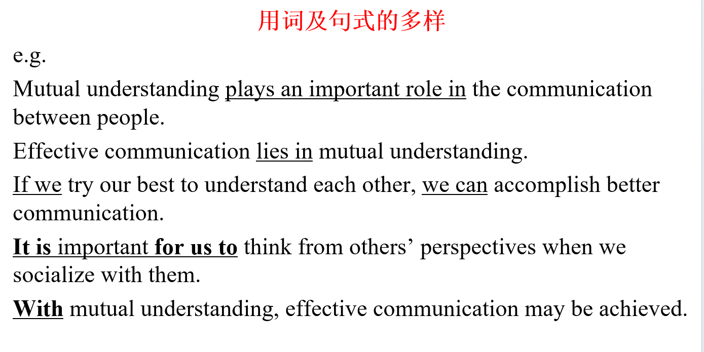
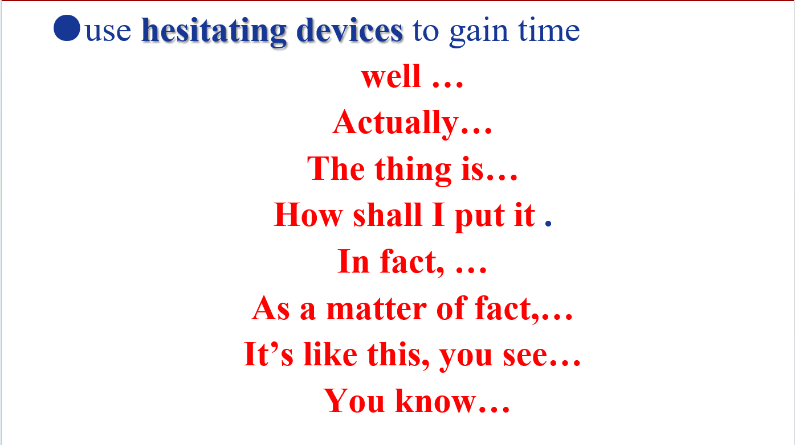

- 1. 第一单元
- 2. 第二单元
- 3. 第三单元
- 4. 第四单元
- 4.1. What do you think is the best means of communication? And why do you think so?
- 4.2. Do you think you can live without your mobile phone? What do you usually use it for? What do you think of the roles that mobile phones play in our life?
- 4.3. It’s very important for us to know how to communicate with others. According to you, how can we achieve effective communication?
- 4.4. Do you think there is a generation gap between you and your parents? According to you, how can we bridge the gap?
- 5. 第五单元
- 6. 口语考试小tip
- 1. 第一单元
- 2. 第二单元
- 3. 第三单元
- 4. 第四单元
- 4.1. What do you think is the best means of communication? And why do you think so?
- 4.2. Do you think you can live without your mobile phone? What do you usually use it for? What do you think of the roles that mobile phones play in our life?
- 4.3. It’s very important for us to know how to communicate with others. According to you, how can we achieve effective communication?
- 4.4. Do you think there is a generation gap between you and your parents? According to you, how can we bridge the gap?
- 5. 第五单元
- 6. 口语考试小tip
第一单元
talk about charity
● Talk about one of the charity events you’ve heard of or got involved in.
- Hope project
- what: donate books to underprivileged areas
- how: school organized
- advocate us to donate books (post posters)
- collect books (in every class)
- send to the poor students (on our own)
- influence: make such a big difference to these children , feel proud
● In Text 2, we have learnt how students raise money for charity in Cambridge. What do you think of students raising money for charity?
- useful (can help a lot of people)
- creative (by punting)(user their labor to earn money which makes it with two sides value)
- kind (spend their time and labority to help people in need)
- well worth us to learn from them
- useful expression:
If you ask me, …
I’d say that …
As I see it, …
In my opinion, …
As far as I’m concerned, …
I’d like to point out that …
The point I’m making is that …
第二单元
talking about hobbies/ leisure activities
eg. My favorite entertainment is basketball.
-
basketball has become part of my life.
when, where & with whom to play it
how I feel when I play it:
(exciting; relaxing, relieve pressure, get refreshed , be energetic, … ) -
I can benefit a lot from basketball.
build a strong body & a strong will
make friends who really love basketball
develop team spirits(helpful to me) -
I’m also crazy about watching basketball games.
I think all the basketball players are very (amazing, cool, strong)
have awesome skills
the changes in leisure activities over the years in China(less possibility)
- read newspapers
- the main way to get information
- news stand are get fewer and fewer(how to fix the problem)
- attend dance meeting
- fashion social activities
- make friendship
- watch opening opera
- every big events or festivals have this kind activities
- cannot miss it
第三单元
Which kind of pets do you like?Talk about it.
eg. I like keeping a cats.
- Why i like cats
- it’s cute ; easy for me to stroke it which is a very comfortable thing.
- it’s helpful. help us to catch mice
- it’s easy to keep. Compare to dogs, it is more docile.
- Dogs like to wolf and a bit more dangerous
- Cats are more safe
- My pets
- I have a cat whose name is ‘Mimi’
- I get her three years ago
- She is very pretty and cute. (sweet-tempered)
- be scared of a mouse once time
What’s good about keeping pets ? What are the problems?
- good
- company ; make us not alone
- eg: Every time I come back from school. It rushed out to welcome me.
- have a lot of happy time with them
- eg: I often take it out and we always have a good time playing together
- company ; make us not alone
- problem
- hygiene
- smell bad if don’t have a bath for a long time
- make water and shit everywherefeedback
- food
- don’t know what and how many to feed them
don’t feed properly
may be hurt by it
- don’t know what and how many to feed them
- hygiene
第四单元
What do you think is the best means of communication? And why do you think so?
- Instant Messaging and Chat Apps:
- Advantages:
- Real-time
- allows for multimedia sharing
- and often supports group conversations.
- Disadvantages
- less possibilty to make face-to-face communication
- Advantages:
Do you think you can live without your mobile phone? What do you usually use it for? What do you think of the roles that mobile phones play in our life?
- NO My mobile phone has become part of my life. I can hardly survive without it.
- I usually use it to serve my life need and get information
- Mobile phons role
- Communication
- get information
- Entertainment
It’s very important for us to know how to communicate with others. According to you, how can we achieve effective communication?
- We human beings are social creatures. One can hardly survive without socializing with others. So it’s very important for us to know how to achieve effective communication.
- active listening
- when you concentrate on others’ opinion, get a lot of useful information
- clarity and conciseness(简明)
- pass your opinion to others clearly and fastly
- choose the right way to communicate
- mobile phone; letters; emails;…
- consider their features comprehensively
Do you think there is a generation gap between you and your parents? According to you, how can we bridge the gap?
- yes
- No language shared with parents
- they couldn’t understand my meaning many times
- fall behind time(don’t konw the hot events)
- share the hot events with them more often
- teach them how to use bilibili
- help them follow the age
第五单元
How do people meet someone to date in today’s Chaina? And what do you think is the best way to find that special someone?
- Online Platform
- provide a good way to meet new friends
- get in touch with others without geographical restrictions
- Friend Introductions
- your friends are outgoing by coincidence
- Interest clubs
- You can always have a talk with them without difficulty because you have the same hobby. And as time passes, you may generate feeling on him or her.
- Social Events and Activities
- Meet people who you may never meet before
- Ask contact information
- At least friendship or find the special someone
What do you think of internet dating? What are the advantages and disadvantages?
- also known as online dating
- has become a popular way to meet someone special
- advantage
- Convenience
- You can learn about others easily by looking at their profile
- Reduced Pressure
- Many people are anxiety when they talk to the opposite sex.
- By online dating you can be relaxed
- Increased posiibilty to have the same interest
- Compare to the way of being introduced by relatives
- you add others usually because you have the same interest
- Convenience
- disadvantage
- Safety Concerns
- The information online is hard to be distinguished
- 仙人跳：being cheated by others using online dating
- cannot get others’ true feelings
- couldn’t see others in reality
- Safety Concerns
What do you think of cyber love? Do you believe that true love can be found online?
- has become a popular way to meet someone special
- Connection Beyond Geography
- Increased posiibilty to have the same interest
- Compare to the way of being introduced by relatives
- you add others usually because you have the same interest
- Safety Concerns
- The information online is hard to be distinguished
- 仙人跳：being cheated by others using online dating
- Balancing Online and Offline Interaction:
- It’s important to transition from online to offline interactions to deepen the connection
口语考试小tip




These are my views on this issue.That’s all.Thank you！
更新时间：2023-12-26 18:36
转载请注明来源，欢迎指出任何有错误或不够清晰的表达本文链接：https://czruby.github.io/2023/12/26/英语听说口语/